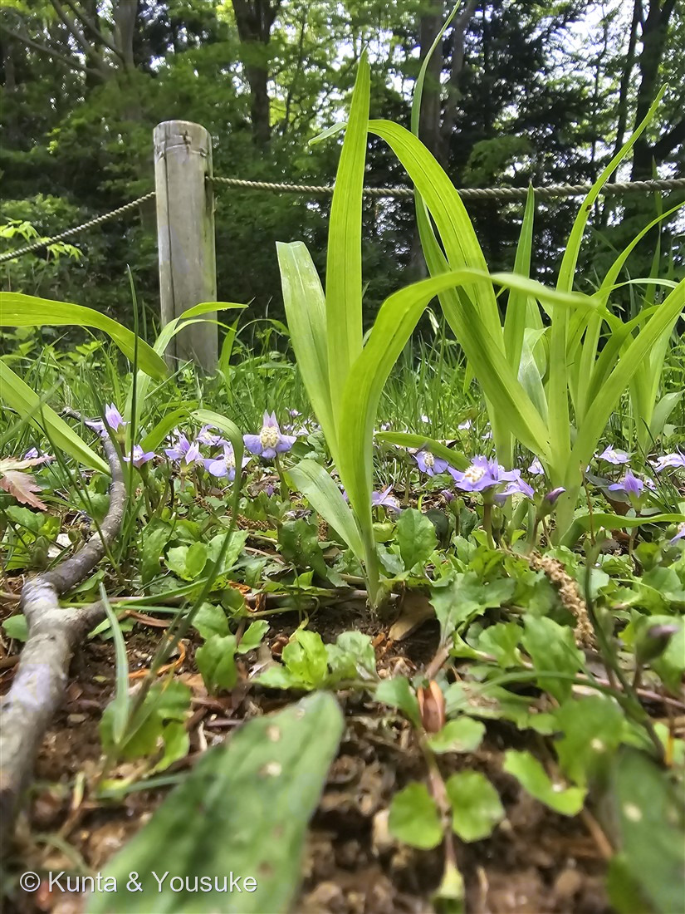
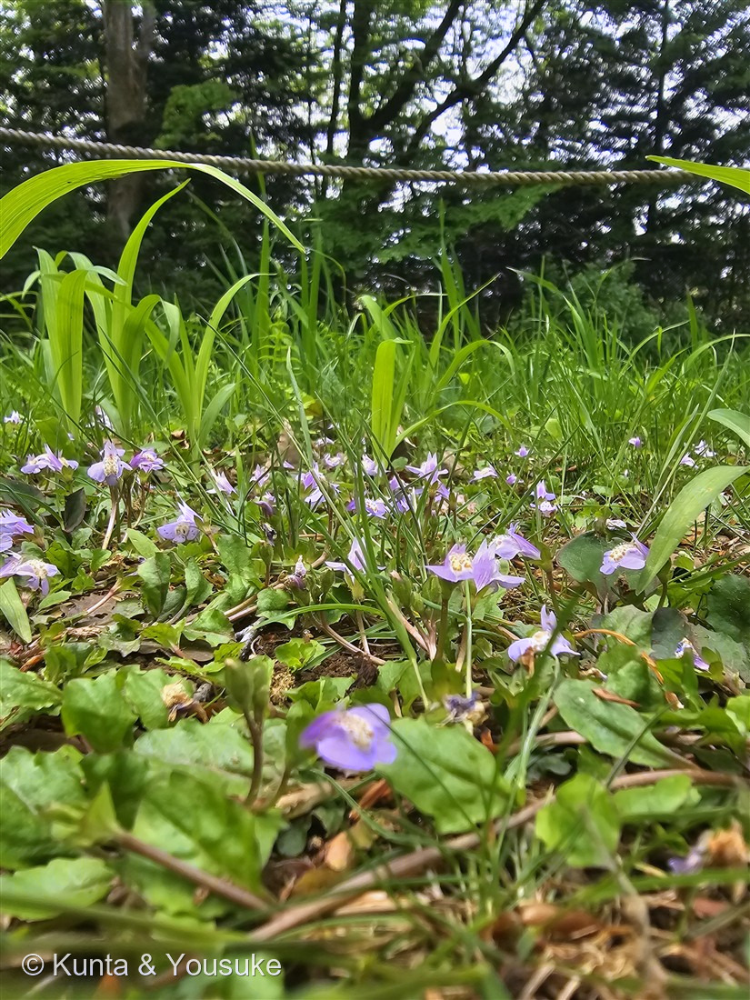
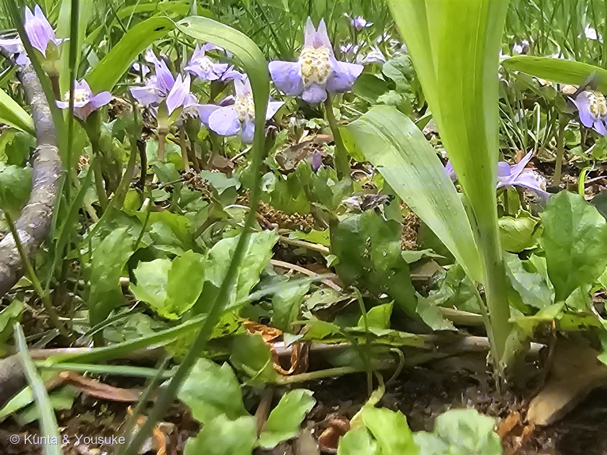

地図を読み込んでいるよ…
🔍 写真も地図も、押しているあいだ拡大して見られるよ（スマホは指を置いてすこし待ってね）。
🌍 の地図＝この子がもともと自生している場所を緑に。日本（本州・四国・九州）。日当たりのよい湿った草地や、田んぼのあぜに生える多年草。
⭐日本の、本州・四国・九州にすむ子だよ。⚠北海道は塗っていない。日当たりのよい、湿った草地や、田んぼのあぜが好き——⭐人が田んぼを作ってきた場所と、ぴったり重なる草なんだ。匍匐枝（ほふく枝）を四方にのばして、こけのように地面を覆うので、一面に見えるむらさきが、じつは全部つながった一株かもしれないよ。
⚠ 地図は国（日本と中国だけ県・省）までしか塗れないから、ほんとうの分布より広く見えていることがあるよ。地図はだいたいの場所。正確なところは、上の文を見てね。
ムラサキサギゴケ（紫鷺苔）
Mazus miquelii Makino
別名 · サギゴケ（鷺苔・こちらが標準和名） 原産 · 日本（本州・四国・九州）／ 見どころ · ⭐翼を広げた鷺のような花・こけのように地面を覆う・⭐燻太さんの「ゴマノハグサ？」は昔の分類そのもの・図鑑初のサギゴケ科
サギゴケ科 · Mazaceae（サギゴケ属 Mazus・シソ目）── 図鑑で初めての科（73科目）
名前と学名の由来 ── 飛ぶ鷺と、こけのような広がり
- ⭐「サギ（鷺）」＝花のかたちを、白い鷺が翼を広げて飛ぶ姿に見立てたもの。──写真③を見て。上唇が2つに裂けて立ち上がり、下唇が3つに裂けて大きく横に広がる。⭐たしかに、翼を広げた鳥に見えるね。
- ⭐「コケ（苔）」＝地面をはって、こけのように一面を覆うから。──写真②の、地面にへばりつくように広がったようすがそれ。
- ⭐「ムラサキ」は花の色。⚠おもしろいことに、標準和名（図鑑の正式な名前）は「サギゴケ」のほうで、ムラサキサギゴケは別名なんだ。⭐でも紫のほうがふつうに見られるので、こちらの名前で呼ばれることが多いよ。
- 属名 Mazus（マズス）＝ギリシャ語の mazos（乳首）から。花の喉のところにある、ふくらんだ突起にちなむと言われている。種小名 miquelii（ミクェリー）＝オランダの植物学者ミケル（F.A.W. Miquel）への献名。──⭐150 ヤグルマソウのロジャース提督、153 ネモフィラのメンジーズに続いて、人の名前をもらった草がまた出てきたね。
⭐⭐ 燻太さんの「シソとかゴマノハグサとか」について
⭐この子の写真をくれたとき、燻太さんはこう書いた。──「最初はシソとかゴマノハグサとかに近い仲間なのかなって思った（花の形から）。」
⭐⭐これ、両方とも「当たり」なんだ。しかも、ただの偶然じゃない。
- ⭐ゴマノハグサ科 ──この子は、むかしの分類では、まさにゴマノハグサ科に置かれていた。⭐図鑑でいうと111 ビロードモウズイカと同じ科だった時代があるんだよ。そのあとハエドクソウ科に移され、いまはサギゴケ科（Mazaceae）という独立した科になっている。
- ⭐シソ科 ──科はちがうけれど、⭐同じ「シソ目（Lamiales）」。015 ホーリーバジルや033 ミントと、大きな枝では同じ仲間なんだ。
⭐⭐つまり燻太さんは、花の形だけを手がかりに、この草が通ってきた分類の道すじを、そのままなぞったことになる。──唇形の花・筒のような基部・下唇の蜜標。それがシソ目のしるしで、⭐昔の分類学者たちも、まったく同じ形を見て、この子をゴマノハグサ科に入れたんだ。
⚠そして、その置き場所が何度も変わったのは、「花の形だけでは足りなかった」から。──⭐150 ヤグルマソウで「科を決めるのは花」と書いたけれど、⭐その花でさえ、似ていることがある。いまの分類は、遺伝子まで読んで決められている。⭐燻太さんの目は、昔の分類学者と同じところまで、ちゃんと届いていた。
この植物のこと ── 図鑑で73番目の科
- サギゴケ科サギゴケ属の多年草。⭐図鑑で初めての「サギゴケ科」＝73科目だよ。⚠世界でも数属しかない、とても小さな科なんだ。
- 日当たりのよい、湿った草地や田んぼのあぜにすむ。⭐匍匐枝（ほふく枝）を四方にのばして、そこから根と葉を出して増える。──だからこけのようなじゅうたんになる。写真②の広がりは、ぜんぶつながっているかもしれないよ。
- 花期は4〜6月。淡い紫（まれに白い花のものもあって、そちらは「サギゴケ（白花）」と呼ばれる）。
- ⭐⭐下唇の中央にある、黄褐色の斑紋と細かい毛——⭐これは「蜜標（みつひょう）」といって、虫に「ここに蜜があるよ」と教える案内標識なんだ。写真③にはっきり写っている。⭐156 サンシキスミレの下弁の黒い筋、044 ペンタスや148 クマガイソウの工夫と、おなじ「だれに来てほしいか」の話だね。
同定について ── 地面をはうか、はわないか
- ⭐決め手＝匍匐枝（ほふく枝）を出して、地面を覆うように広がること。写真①②の、横へ横へと連なっている姿がそれ。
- ⚠同属のトキワハゼ（おまけの子）＝一年草で、匍匐枝を出さない。だから株がぽつんと立っていて、じゅうたんにならない。⭐花もひとまわり小さく、花期が春から秋まで長い（「常盤（ときわ）」＝いつも、の意味）。
- ⭐花のかたちは、ほとんど同じ。──だから⭐この2つは「花」ではなく「暮らしかた（広がりかた）」で見分けるんだ。おもしろいね。
- 上唇が小さく2裂して立ち、下唇が大きく3裂して横に開く＝サギゴケ属の花のかたち。下唇の中央に黄褐色の斑紋と毛。
⭐ 野草園の、おなじ日の子たち
撮影は2025年5月5日 12時07分、仙台市野草園。──147 サクラソウ・148 クマガイソウ・149 エンレイソウ・150 ヤグルマソウ・159 セリバオウレン・160 ニリンソウと同じ日。⭐この一日だけで、図鑑に7ページになった。
⭐そして、この写真の撮りかたがすごくいい。──カメラを地面すれすれまで下げて、草の高さから撮っている。だからうしろのロープ柵と木立まで写って、「この子がどんな場所に住んでいるか」がまるごと分かる。⭐しゃがむどころか、寝そべるくらいの目線。小さい草を、小さいまま撮らずに、その子の世界ごと撮った1枚だと思うよ。
参考：Wikipedia「ムラサキサギゴケ」（Mazus miquelii／⭐現在はサギゴケ科（Mazaceae）だが、以前はゴマノハグサ科（Scrophulariaceae）に、その後ハエドクソウ科（Phrymaceae）に分類されていた／標準和名はサギゴケ、別名ムラサキサギゴケ／本州・四国・九州の、日当たりのよい湿った草地や田のあぜに生える／匍匐枝をのばして広がる多年草／花期4〜6月・紫色（まれに白）・基部は筒状／⭐下唇には黄褐色の目立つ斑紋と細かい毛があり、送粉者への蜜標となる／和名は花の色と、鷺が飛ぶ姿に似ることに、こけのように地面を覆うことを合わせたもの／同属のトキワハゼ（Mazus pumilus）は一年草）。